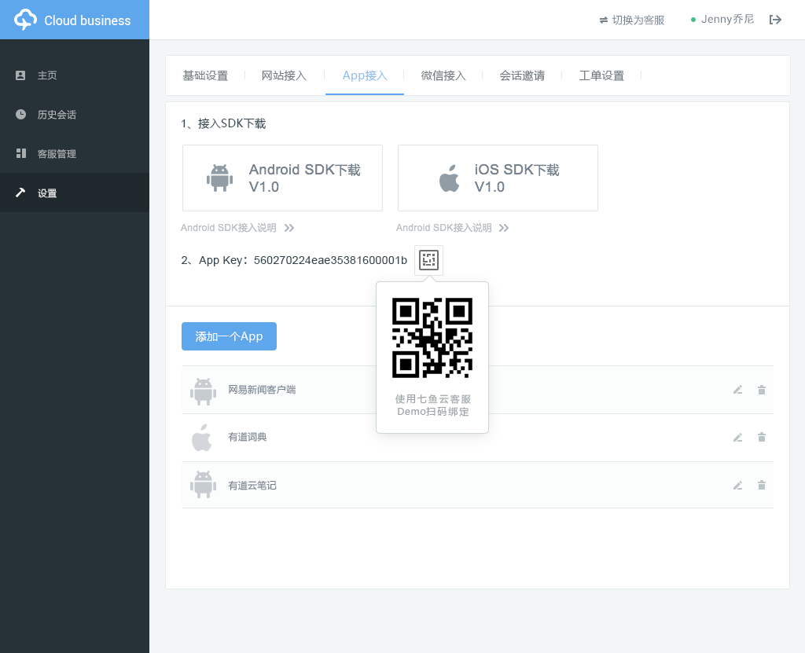

七鱼DemoApp是七鱼云客服提供给用户及开发者的一个体验App，主要包含移动端客服界面和开发定制功能体验模块。用户在完成AppKey绑定后，可以通过Demo与对应企业七鱼云客服平台发起会话，完整体验七鱼移动SDK提供的多媒体消息收发、用户排队、离线留言、满意度评价等功能。同时支持轻量CRM接入、接口CRM接入、聊天窗口素材替换等开发者定制功能的体验。
用户可以在七鱼官网演示Demo下载页面中，下载到最新版本的Android和iOS访客端DemoApp。
需注意的是，iOS9.0以上的系统，需要在“设置-通用-设备管理”中完成“七鱼客服Demo”信任操作。
开发者可以在七鱼官网开发资源下载页面 中下载到DemoApp的源码，便于在接入过程中参考。
DemoApp本身自带了默认Demo企业的AppKey，可以直接与默认企业发起会话，体验七鱼云客服移动SDK所提供的功能。如果用户希望与自己企业的七鱼云客服平台建立会话，可以在DemoApp中完成与自己企业AppKey绑定，其中
（1）可以在“七鱼云客服平台管理端-设置-App接入”中找到企业对应的AppKey及二维码： 
（2）DemoApp支持扫码和手动输入两种方式完成AppKey绑定：

DemoApp模拟了一个互联网金融类App的界面，用户可以在首页、产品介绍页和设置页发起客服咨询：

会话建立后，用户可以完整体验文字、语音、图片等多媒体消息的收发，以及用户排队、离线留言、满意度评价等功能。
DemoApp在“设置-个人信息”中支持切换匿名与非匿名用户，非匿名状态下发起的会话，客服可以在当前会话右侧看到由应用上报的用户信息。企业可以根据需要将访客的姓名、手机号、最近订单号、收货地址等常用信息上报，客服在会话接入时即可对访客基本信息有所了解，减少了询问常用信息的时间，能够提升客服工作效率和访客的满意度。
七鱼云客服支持轻量级接入和接口接入两种个人信息接入方式，详细的接入文档和使用说明可以查看 网易七鱼企业信息对接开发指南 。
七鱼云客服支持开发者自定义聊天窗口样式，其中包括窗口背景、字体颜色、气泡样式、通知banner样式、客服访客头像等素材的自定义，在DemoApp设置中选择切换窗口样式，可以查看自定义后的窗口样式。